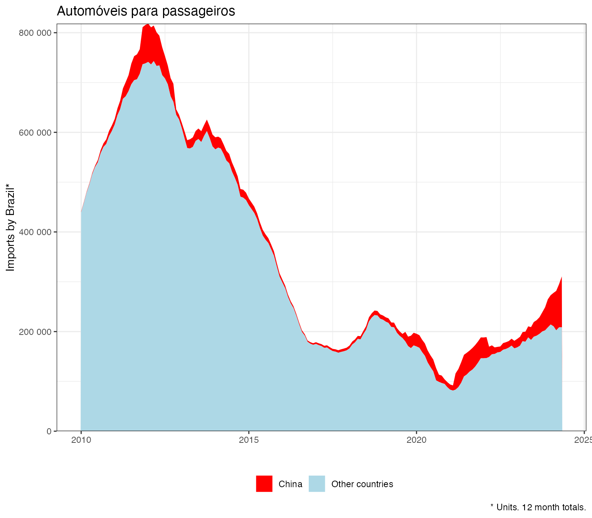
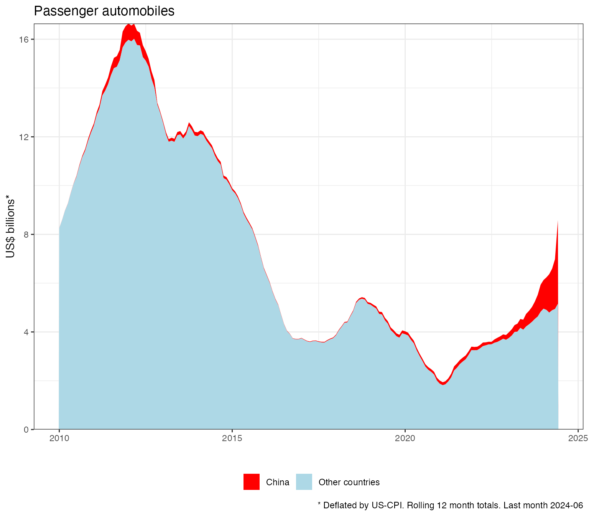

library(comexstatr)
library(dplyr)
#>
#> Attaching package: 'dplyr'
#> The following objects are masked from 'package:stats':
#>
#> filter, lag
#> The following objects are masked from 'package:base':
#>
#> intersect, setdiff, setequal, union
try({comex_download(years = 2009:2024, types = "ncm"
, ssl_verifypeer=FALSE ## might need this for Brazilian gov websites
)})
comex_ncm_f <- comex_ncm() |> filter(year>=2009)
cars <- comex_ncm_f |>
left_join(ncms()%>%select(ncm=co_ncm, co_cgce_n3
))|>
filter(co_cgce_n3==312 ## passenger vehicles
)|>
group_by(direction, date
, china=country_code==160
)|>
comex_sum()|>
collect()
library(lubridate) ## needs to import for slide_index_dbl to work
#> Warning: package 'lubridate' was built under R version 4.3.1
#>
#> Attaching package: 'lubridate'
#> The following objects are masked from 'package:base':
#>
#> date, intersect, setdiff, union
cars_roll <- cars|>
group_by(direction, china)|>
comex_roll()
ggplot(aes(x=date,y=qt_stat_12,
, fill = china
), data=
cars_roll%>%
mutate(china=if_else(china, "China", "Other countries"))%>%
filter(date>="2010-01-01",
direction=="imp",
!is.na(qt_stat_12))) +
scale_y_continuous(labels=scales::label_number_auto(), limits=c(0,NA), expand = c(0,0))+
geom_area() +
scale_fill_manual(values = c("red", "lightblue"))+
labs(x="", y="Imports by Brazil*", caption=glue::glue("* Units. 12 month totals. Last month {max(substr(cars_roll$date,1,7))}"), fill="", title="Passenger automobiles", linetype="") +
theme_bw()+theme(legend.position="bottom")
cars_deflated <- cars|>
comex_deflate()|>
group_by(direction, china
)|>
comex_roll()|>
filter(date>="2010-01-01",
direction=="imp",
!is.na(fob_usd_deflated_12))
ggplot(aes(x=date,y=fob_usd_deflated_12/1e9,
, fill = china
), data=
cars_deflated%>%
mutate(china=if_else(china, "China", "Other countries"))
) +
scale_y_continuous(labels=scales::label_number_auto(), limits=c(0,NA), expand = c(0,0))+
geom_area() +
scale_fill_manual(values = c("red", "lightblue"))+
labs(x="", y="US$ billions*",
caption=glue::glue("* Deflated by US-CPI. Rolling 12 month totals. Last month {max(substr(cars_deflated$date,1,7))}"), fill="", title="Passenger automobiles", linetype="") +
theme_bw()+theme(legend.position="bottom")